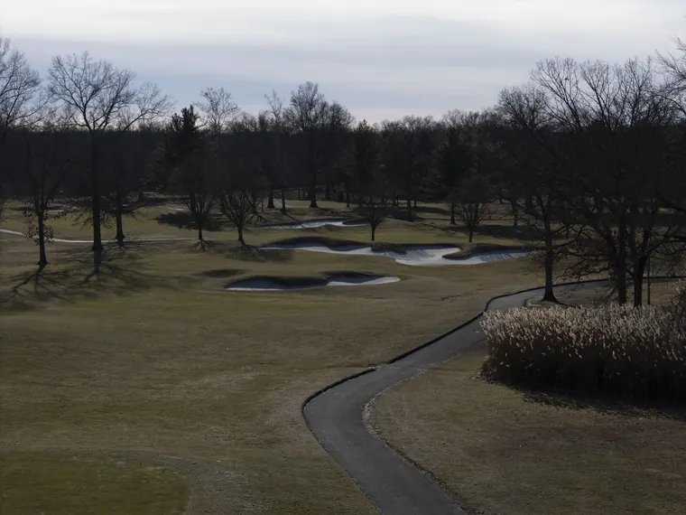
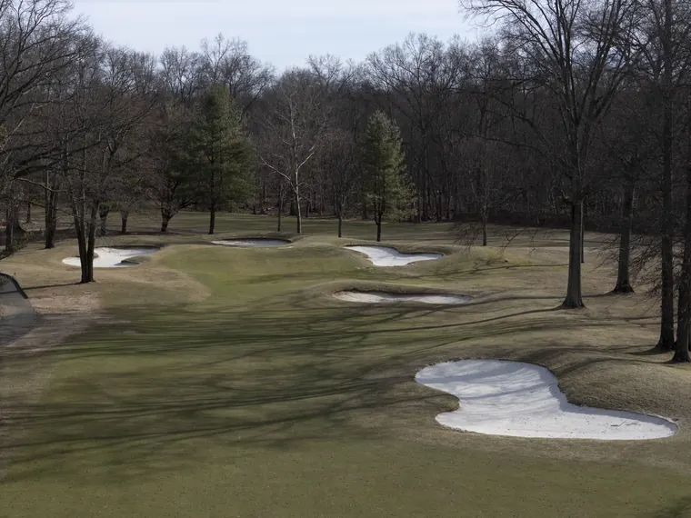
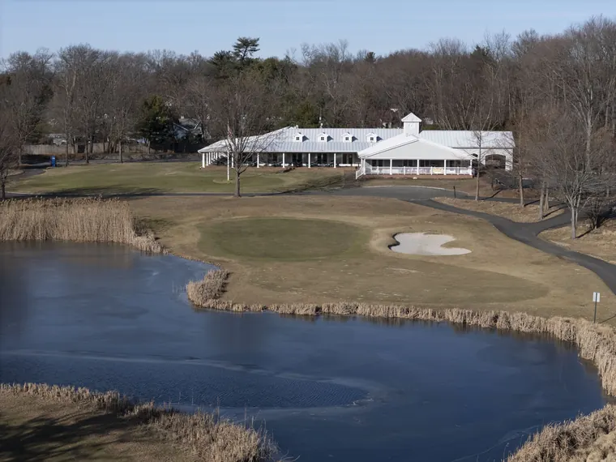

Bergen County · New Jersey
A History of Valley Brook
Valley Brook Golf Course sits on a gently rolling parcel of land at 15 Rivervale Road in River Vale, Bergen County, New Jersey, bounded on its western edge by Pascack Brook. The property carries six decades of golf history, played on the same ground under four different names, through multiple changes in ownership and shifts between public and private operation, a complete redesign, and ultimately a transition back to public stewardship.
- Park Vale Country Club — 1963–1973
- Pascack Valley Golf & Country Club — 1973–1982
- Pascack Brook Golf & Country Club — 1982–1999
- The Redesign — 1999–2001
- Valley Brook Golf Course — 2001–Present
Park Vale Country Club 1963 – 1973
The course was conceived and built by John Handwerg, Sr. and his son, John Handwerg, Jr. The elder Handwerg was already a fixture in the region’s golf community. Born in Old Tappan, he had been a River Vale resident for more than five decades and had built several of the area’s best-known courses, including River Vale Country Club and Edgewood Country Club, as well as Camelot Country Club in Spring Valley, New York. His son John Jr., a golf champion during his undergraduate years at Dartmouth, had joined his father in the family business.
In the spring of 1963, the Handwergs were preparing two new courses for simultaneous opening: Knob Hill, near Freehold, and Park Vale Country Club, in River Vale. A photograph published on May 12, 1963 showed father and son together on the new property, checking the location of a sand trap. Two weeks later, a brief notice announced the opening:
“GOLFERS — Handwerg’s Park Vale Country Club is opening for play on Memorial Day.”
The course operated as Park Vale for roughly the next decade, with records of play through the early 1970s, including a July 1972 hole-in-one by Fred Boerum of Oakland on the 155-yard 12th hole. John Handwerg, Sr. died at his home on Rivervale Road on December 20, 1969, leaving the course in his son’s hands and within the broader Handwerg family.

Pascack Valley Golf & Country Club 1973 – 1982
Sometime between 1972 and 1974, the course changed hands and was renamed Pascack Valley Golf and Country Club. By April 1974, a new owner was speaking publicly about plans to revitalize the property, pledging to make it a meaningful test for experienced and beginner golfers alike. The course operated under the Pascack Valley name for roughly the next eight years.
Pascack Brook Golf & Country Club 1982 – 1999
In April 1982, the course changed ownership for the third time in its 19-year history. With the new ownership came a new name. An April 25, 1982 article reported the change directly:
“Pascack Valley Golf and Country Club… changed owners last week for the third time in its 19 year history. It also changed names, and is called Pascack Brook Golf and Country Club.”
The Pascack Brook era lasted nearly two decades, and by most accounts the course’s reputation declined during that span. By the late 1990s it had become, in the words of head professional Don Stenberg, “a horror show … a bad layout that was poorly maintained and managed.” The fairways were described as “mostly crabgrass,” and the course had become, in Stenberg’s summary, “just a golf mill” — moving rounds through but offering little of the experience the property could support.

The Redesign 1999 – 2001
In the late 1990s the property was acquired by United Properties Group, which commissioned a comprehensive redesign and renovation, retaining Atlanta-based golf course architect — and later ASGCA member — Bill Boswell to lead the work. The redesign was substantial. Holes 1 through 6 and 10 through 15 were retained in approximately their original positions, but the remaining holes were rerouted to accommodate a new 270-yard practice range.
The clubhouse was reimagined in a Cape Cod style, with a tin roof, a new banquet facility, and an expanded pro shop. A 9,000-square-foot putting green was installed at the clubhouse, alongside additional practice greens and bunkers. A new pond was excavated in front of the clubhouse, between the new 9th and 18th greens; the 9th hole was rebuilt as a 164-yard par 3 playing over the new water. Tees and greens were rebuilt throughout, fairways were converted to bent grass, four hundred fifty new trees were planted, and a new irrigation system was installed across roughly 95 percent of the playing surface. The reworked course played to 6,150 yards from the back tees, at a par of 70.
With the redesign substantially complete, the course was formally renamed Valley Brook Golf Club. A promotional advertisement from the period — “Discover a Classic… Discover Valley Brook Golf Club” — billed the property as “Northern New Jersey’s Finest New Golf Course.”
Valley Brook Golf Course 2001 – Present
The course continued under United Properties Group’s ownership for several years following the reopening. In 2006, Bergen County acquired the property, adding Valley Brook Golf Course to its portfolio of public courses serving residents of the county. The course has operated as part of the Bergen County system ever since, alongside Darlington, Orchard Hills, Overpeck, Rockleigh, and Soldier Hill.
The Northeast Golf Company first engaged with Valley Brook in 2012, when Robert McNeil, ASGCA, led a renovation project on the course. The present Master Plan continues that relationship, providing a long-term framework for the next chapter in the course’s evolution. Sixty years after the Handwergs walked the property laying out the course, Valley Brook remains what it has always tried to be: an accessible, well-considered public golf course on a quiet, rolling piece of Bergen County land, set along the banks of Pascack Brook.
This Master Plan is offered as the next chapter in that history — a framework for strengthening the aesthetic, agronomic, and strategic qualities of the course, and for increasing the enjoyment of all who visit Valley Brook.
